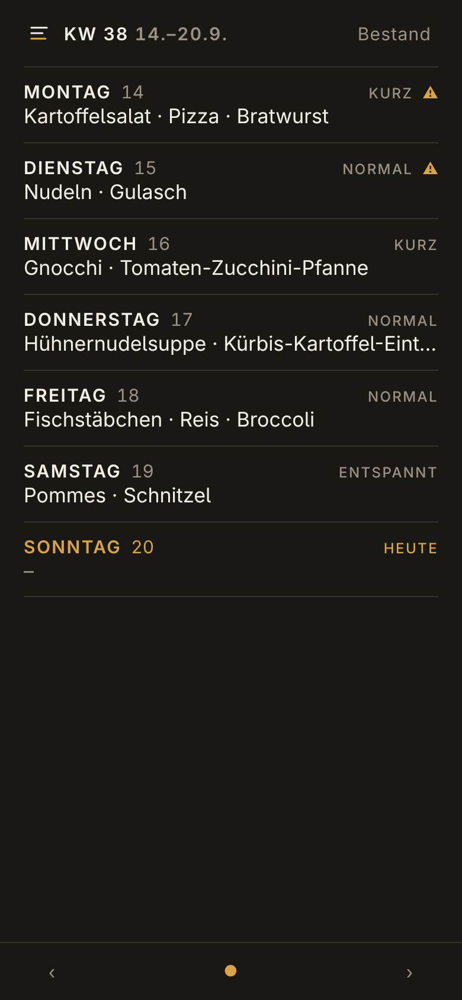
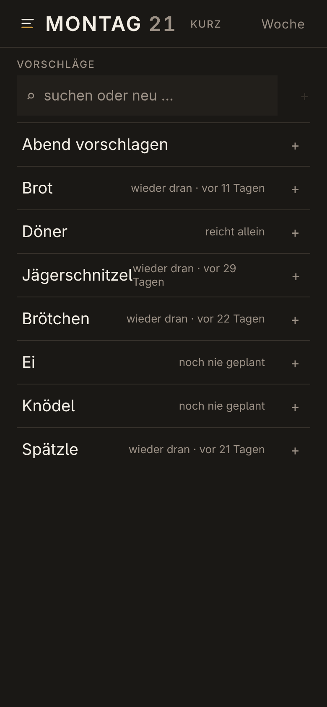
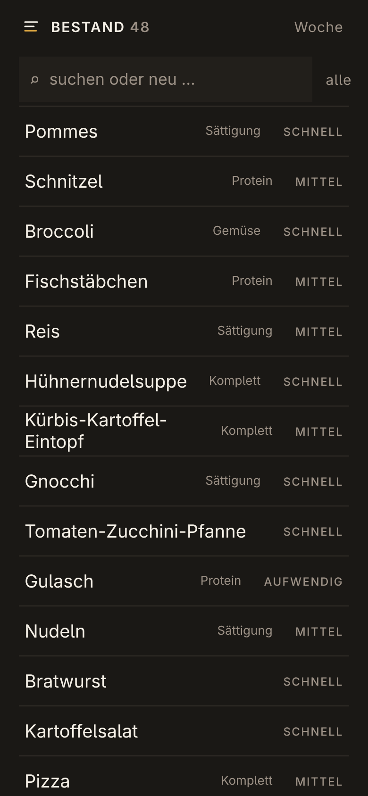

Wochenplanung fürs Abendessen. Ein Abend ist eine Menge von Items, kein Gericht —
Kartoffeln, Broccoli und Bratwurst sind eine Mahlzeit für alle am Tisch, und wer etwas davon nicht
will, lässt es weg. Die App schlägt vor, sie entscheidet nicht: jeder Platz ist
überschreibbar, jede Warnung ist ein Hinweis.
Drei Screens

Die Woche. Sieben Abende auf einem Handy-Screen, ohne Scrollen. Teller,
Aufwand und eine Warnung, wenn ein Abend mehr Zeit will, als der Wochentag hat.

Ein Abend. Ein Tipp fügt hinzu, ein Tipp entfernt, sofort gespeichert. Jeder
Vorschlag trägt seinen Grund in Worten — nie eine Punktzahl.

Der Bestand. Von Hand gepflegt: welche Rolle ein Item auf dem Teller spielt,
wie aufwendig es ist und was pausiert.
Wie es vorschlägt
Rhythmus statt Datum. Jedes Item hat seinen eigenen Takt, aus seiner eigenen
Geschichte gelesen — Brot nach drei Tagen und der Braten nach einem Monat sind beide dran.
Nur Kombinationen, die es gab. Ein vorgeschlagener Abend wächst über Teller, die es
wirklich gegeben hat, nie durch Zusammenstellen von Teilen, die sich nie begegnet sind.
Zeit zählt zuerst. Jeder Wochentag hat eine Aufwandsstufe, und ein Abend, der mehr
verlangt, sagt das — als Hinweis, nie als Veto.
Nichts wird versteckt. Das unpassendste Item taucht immer noch auf, nur eben
zuletzt.
Starten
Bun, SQLite und TypeScript, auril.js im Frontend.
Eine Sprache, eine Datenbank, ein Prozess — kein Build-Schritt, keine Runtime-Dependencies.
bun src/server.ts # http://localhost:4173
TABLE_SIX_LANG=en bun src/server.ts # Englisch statt Deutsch
Die Oberfläche spricht Deutsch oder Englisch, eine Sprache pro Deployment.